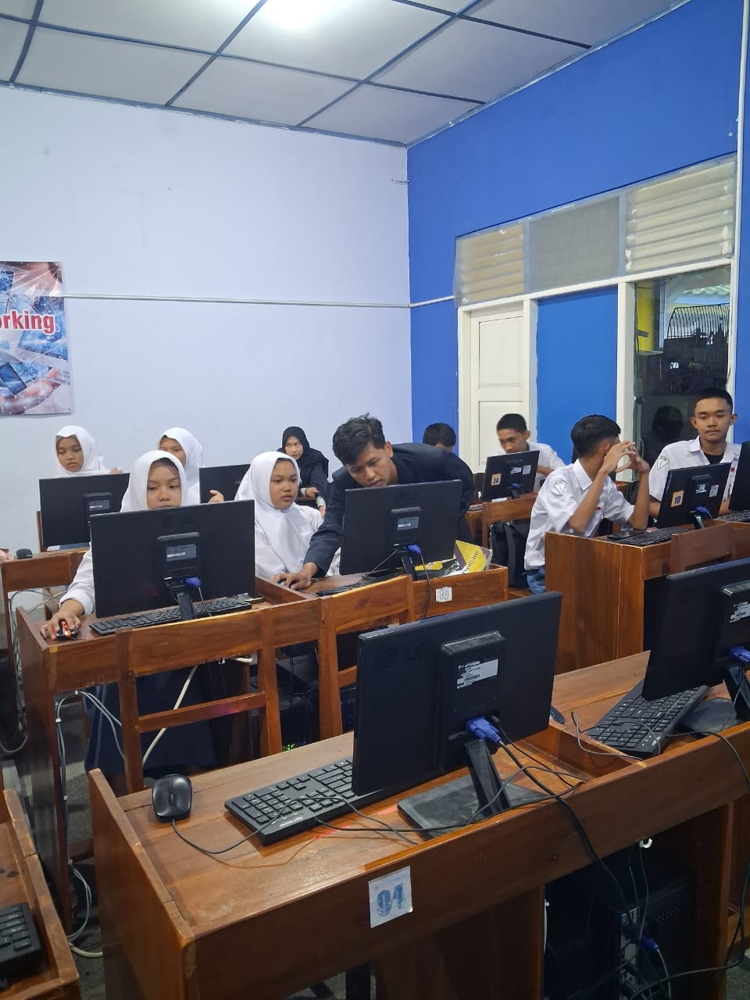
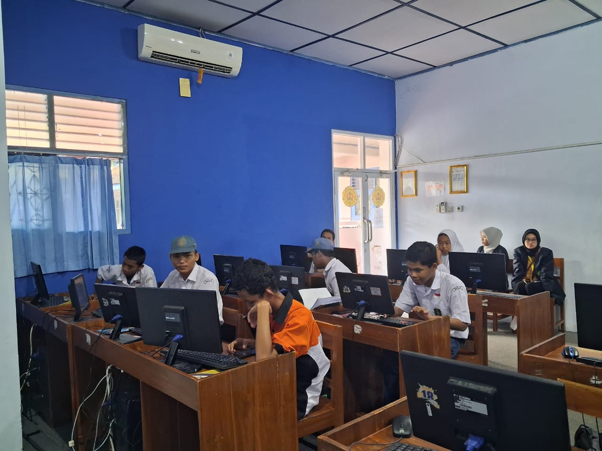

Pelatihan Dasar Pemrograman di SMK Muhammadiyah 1 Playen: Serunya Belajar Coding dengan Bahasa Indonesia
Gunungkidul – Aula SMK Muhammadiyah 1 Playen pada Sabtu pagi terlihat lebih ramai dari biasanya. Sejumlah siswa duduk dengan penuh perhatian, laptop di depan mereka sudah menyala, siap untuk mengikuti Pelatihan Dasar Pemrograman yang kali ini sedikit berbeda dari biasanya: menggunakan bahasa pemrograman BAIK (Bahasa Anak Indonesia untuk Komputer).
Pelatihan dibuka dengan sesi pengenalan. Pemateri terlebih dahulu menjelaskan apa itu pemrograman dan bagaimana coding menjadi salah satu keterampilan penting di era digital. Menariknya, bahasa pemrograman yang dipakai bukan Python, C, ataupun Java, melainkan bahasa pemrograman berbahasa Indonesia. “Dengan BAIK lang, siswa bisa lebih mudah memahami logika coding karena sintaksnya menggunakan bahasa sehari-hari,” jelas pemateri.
Setelah penjelasan awal, kegiatan berlanjut dengan sesi quiz interaktif. Beberapa siswa terlihat antusias mengangkat tangan ketika ditanya konsep sederhana, seperti apa itu variabel, bagaimana logika percabangan bekerja, hingga peran perulangan dalam program. Suasana menjadi lebih hidup ketika pemateri memberikan hadiah kecil bagi siswa yang bisa menjawab dengan tepat.
Puncak kegiatan datang pada sesi mini project. Para siswa diajak untuk membuat sebuah program kalkulator sederhana dengan BAIK lang. Meski sederhana, tantangan ini membuat beberapa siswa harus berpikir keras: bagaimana cara menerima input angka, melakukan operasi penjumlahan atau pengurangan, hingga menampilkan hasil. Ada yang mulanya kebingungan karena salah menulis sintaks, ada juga yang langsung berhasil menjalankan programnya.
Suasana semakin seru ketika program yang dibuat siswa berhasil dijalankan. Terdengar suara kecil penuh semangat: “Berhasil, Kak!” teriak salah seorang siswa ketika kalkulator buatannya menampilkan hasil yang benar. Sorak kecil dari teman-temannya membuat ruangan terasa lebih hangat.
Pelatihan ditutup dengan refleksi singkat. Beberapa siswa mengaku baru pertama kali tahu bahwa coding bisa dilakukan dengan bahasa Indonesia. “Ternyata menyenangkan juga, jadi lebih gampang dimengerti,” ujar salah satu peserta.
Dengan adanya pelatihan ini, diharapkan para siswa tidak hanya mengenal pemrograman secara teknis, tetapi juga menumbuhkan rasa percaya diri bahwa belajar coding bukanlah hal yang menakutkan. Justru, ia bisa menjadi jendela baru untuk berkreasi dan berinovasi.